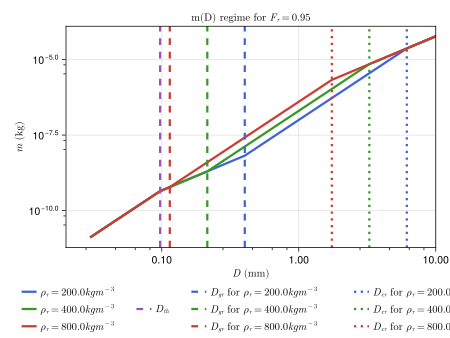
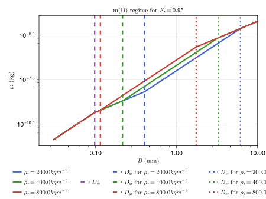
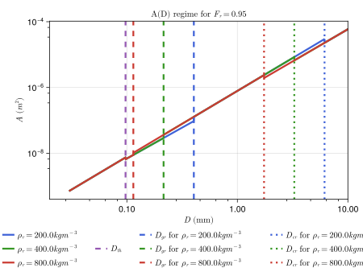
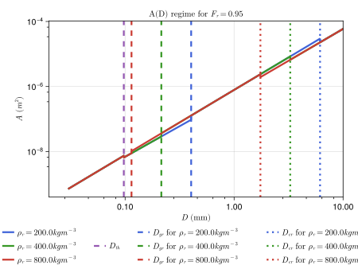

P3 Scheme
The P3Scheme.jl module implements the predicted particle properties (P3) scheme for ice-phase microphysics developed by [22] The P3 scheme is a 2-moment, bulk scheme involving a single ice-phase category with 4 degrees of freedom: total mass, rime mass, rime volume, and number mixing ratios. Traditionally, cloud ice microphysics schemes use various predefined categories (such as ice, graupel, or hail) to represent ice modes, but the P3 scheme sidesteps the problem of prescribing transitions between ice categories by adopting a single ice category and evolving its properties. This simplification aids in attempts to constrain the scheme's free parameters.
The prognostic variables are:
- $N_{ice}$ - number concentration 1/m3
- $q_{ice}$ - ice mass density kg/m3
- $q_{rim}$ - rime mass density kg/m3
- $B_{rim}$ - rime volume - (volume of rime per total air volume: dimensionless)
TODO - At some point we should switch to specific humidities...
Assumed particle size distribution (PSD)
Following [22], the scheme assumes a gamma distribution for the concentration of particles per unit volume based on particle size measurements obtained by [23] in tropical and midlatitude ice clouds and implemented by [24]:
\[N'(D) = N_{0} D^\mu \, e^{-\lambda \, D}\]
where:
- $N'$ is the number concentration in $m^{-4}$
- $D$ is the maximum particle dimension in $m$,
- $N_0$ is the intercept parameter in $m^{-4}$,
- $\mu$ is the shape parameter (dimensionless),
- $\lambda$ is the slope parameter in $m^{-1}$.
We assume $\mu \ = 0.00191 \; \lambda \ ^{0.8} - 2$. Following [24] we limit $\mu \ \in (0,6)$. A negative $\mu$ can occur only for very small mean particle sizes$\frac{1}{\lambda} < ~0.17 mm$. $N_0$ and $\lambda$ can be found using different moments of the PSD, namely the total number concentration $N$ and mass mixing ratio $q$, where
\[N = \int_{0}^{\infty} \! N'(D) \mathrm{d}D\]
\[q = \int_{0}^{\infty} \! m(D) N'(D) \mathrm{d}D\]
For liquid droplets, these equations are solved without issue, but for ice, the third moment of the size distribution listed above (i.e. $\int_{0}^{\infty} \! m(D) N'(D) \mathrm{d}D$) varies as the mass relation varies across the PSD (see below for the mass regime documentation). On the other hand, the first moment of the PSD, the number concentration, does not vary across the PSD and yields $N = \frac{N_0}{\lambda}$.
TODO - The scheme uses a mean particle size value $D_m$ for each time step to determine which mass relation to employ. In other words, $N_0$ and $\lambda$ must be calculated for the five different mass relations below to accommodate ranges of $D_m$ corresponding to each mass relation. For mean particle sizes that employ the mass relations characterized by graupel and by partially rimed ice, the mass relations are time-dependent due to the presence of $\rho_g$ and $F_r$. This complicates the scheme's use of the PSD, and as a result, writing analytical formulas for the PSD parameters is challenging.
Assumed particle mass relationships
The mass $m$ of particles as a function of maximum particle dimension $D$ is a piecewise function with variable thresholds described by the following table.
| particle properties | condition(s) | m(D) relation |
|---|---|---|
| small, spherical ice | $D < D_{th}$ | $\frac{\pi}{6} \rho_i \ D^3$ |
| large, unrimed ice | $q_{rim} = 0$ and $D > D_{th}$ | $\alpha_{va} \ D^{\beta_{va}}$ |
| dense nonspherical ice | $q_{rim} > 0$ and $D_{gr} > D > D_{th}$ | $\alpha_{va} \ D^{\beta_{va}}$ |
| graupel (completely rimed, spherical) | $q_{rim} > 0$ and $D_{cr} > D > D_{gr}$ | $\frac{\pi}{6} \rho_g \ D^3$ |
| partially rimed ice | $q_{rim} > 0$ and $D > D_{cr}$ | $\frac{\alpha_{va}}{1-F_r} D^{\beta_{va}}$ |
where:
- $D_{th}$, $D_{gr}$, $D_{cr}$ are particle size thresholds in $m$,
- $\rho_i$ is cloud ice density in $kg m^{-3}$,
- $\beta_{va} = 1.9$ is a dimensionless parameter from [25] (based on measurements of vapor diffusion and aggregation in midlatitude cirrus),
- $\alpha_{va} = 7.38 \; 10^{-11} \; 10^{6 \beta_{va} - 3}$ in $kg m^{-β_{va}}$ is a parameter modified for units from [25] in base SI units (also based on measurements of vapor diffusion and aggregation in midlatitude cirrus),
- $\rho_g$ is the bulk density of graupel in $kg m^{-3}$.
The first threshold is solely determined by the free parameters: $D_{th} = (\frac{\pi \rho_i}{6\alpha_{va}})^{\frac{1}{\beta_{va} - 3}}$. The remaining thresholds: $D_{gr}$, $D_{cr}$, as well as the bulk density of graupel $\rho_{g}$, and the bulk density of the unrimed part $\rho_d$ form a nonlinear system:
- $D_{gr} = (\frac{6\alpha_{va}}{\pi \rho_g})^{\frac{1}{3 - \beta_{va}}}$
- $D_{cr} = [ (\frac{1}{1-F_r}) \frac{6 \alpha_{va}}{\pi \rho_g} ]^{\frac{1}{3 - \beta_{va}}}$
- $\rho_g = \rho_r F_r + (1 - F_r) \rho_d$
- $\rho_d = \frac{6\alpha_{va}(D_{cr}^{\beta{va} \ - 2} - D_{gr}^{\beta{va} \ - 2})}{\pi \ (\beta_{va} \ - 2)(D_{cr}-D_{gr})}$
where
- $F_r = \frac{q_{rim}}{q_{ice}}$ is the rime mass fraction,
- $\rho_{r} = \frac{q_{rim}}{B_{rim}}$ is the predicted rime density.
The system is solved using NonlinearSolve.jl.
TODO - The use of NonlinearSolve.jl is not ideal because of its runtime and memory allocation requirements. Currently, there is also a look-up table NetCDF file which could be used to look up values of the quantities which form the nonlinear system. However, the look-up table is not GPU-compatible and would require too much memory in an Earth System Model. The current approach may be of use for testing and for visualization of the system, but other options, such as using RootSolvers.jl or using a simpler fit that approximates the solver output, are more suitable long term solutions which do not require outside packages which employ auto-differentiation or use memory, both of which do not suit the needs of CliMA.
Assumed particle projected area relationships
The projected area $A$ of particles as a function of maximum particle dimension $D$ is another piecewise function with variable breakpoints described by the following table. The mean particle dimension $D_m$, a predicted property, determines which portion of the piecewise function to use for each time step.
| particle properties | condition(s) | A(D) relation |
|---|---|---|
| small, spherical ice | $D < D_{th}$ | $\frac{\pi}{4} D^2$ |
| large, unrimed ice | $q_{rim} = 0$ and $D > D_{th}$ | $\gamma \ D^{\sigma}$ |
| dense nonspherical ice | $q_{rim} > 0$ and $D_{gr} > D > D_{th}$ | $\gamma \ D^{\sigma}$ |
| graupel (completely rimed, spherical) | $q_{rim} > 0$ and $D_{cr} > D > D_{gr}$ | $\frac{\pi}{4} D^2$ |
| partially rimed ice | $q_{rim} > 0$ and $D > D_{cr}$ | $F_{r} \frac{\pi}{4} D^2 + (1-F_{r})\gamma \ D^{\sigma}$ |
where all variables from the m(D) regime are as defined above, and:
- $\gamma = 0.2285$ ($m^{2 - \sigma}$) where
- $\sigma = 1.88$ (dimensionless), both from the aggregates of side planes, columns, bullets, and planar polycrystals in [26].
TODO - As mentioned in issue #151, the units of $\gamma$ and $\sigma$ are not immediately clear from [26] and [22]. To resolve this issue, it may be useful to contact the authors of the paper, or, examine the representative figures below to check units. It has occured to me that the units of $D$ are probably m and that the units of $A$ are probably m2. I have assumed these dimensions for the time being. Another likely scenario would be if $D$ had units of mm, in which case we would have $\gamma = 0.2285 \; 10^{3 \sigma}$ to correct for units. However, the plots of area versus particle dimension look outlandish in this case.
Example figures
Below we show the m(D) regime, replicating Figures 1 (a) and (b) from [22]. We also show a(D).
include("plots/P3SchemePlots.jl")CairoMakie.Screen{SVG}
 
  
